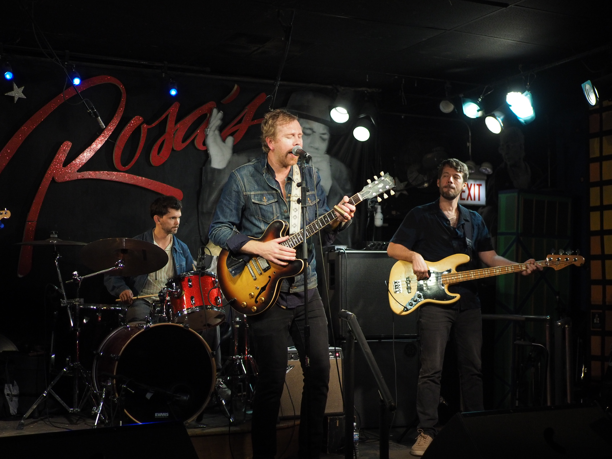

Photo Essay
This photo essay was created for the course Documentary Photography for the Sciences at UW-Madison to practice building a compelling narrative to accompany my photography. The photo essay captures my experience watching my cousin’s band perform at Rosa’s Lounge in Chicago. View the photo essay below or click to view in its original PDF format
Reed Turchi Live at Rosa’s Lounge

Reed Turchi, one of the top blues musicians in the US (and my cousin), jamming out at the last venue on the tour for his latest album, World on Fire
Welcome to Rosa’s

For over 45 years Rosa’s Lounge has hosted some the top blues artists in the nation, with live shows seven days a week
Tuning Up

Properly turned instruments are essential for a great show
Ready for the Blues

Reed’s guitar, the centerpiece of the show, is ready for action
Boom Boom Pow

The drumkit lies in wait, moments before the start of the show
And We’re Live

Reed Turchi and his band take the stage to play their hearts out
Man of the Hour

Reed Turchi takes slide guitar blues to the next level
Movin’ and Groovin’

Some music is just too good to stay seated; the blues just makes you wanna dance. What a way to end the final show of the tour